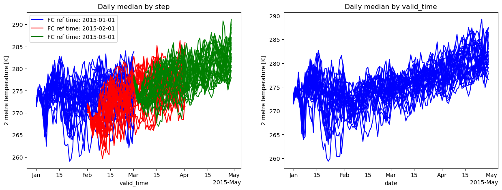

Daily statistics from six-hourly SEAS5 data
[1]:
from earthkit.transforms import aggregate as ekt
from earthkit import data as ekd
from earthkit.data.testing import earthkit_remote_test_data_file
ekd.settings.set("cache-policy", "user")
import matplotlib.pyplot as plt
/tmp/ipykernel_4239/1981593677.py:1: FutureWarning: The 'earthkit.transforms.aggregate' module is deprecated and will be removed in version 2.X of earthkit.transforms. Please import the from earthkit.transforms, e.g.: from earthkit.transforms import spatial
from earthkit.transforms import aggregate as ekt
Load some test data
All earthkit-transforms methods can be called with earthkit-data objects (Readers and Wrappers) or with the pre-loaded xarray.
In this example we will use three initialisation of the SEAS5 2m temperature data on a 1.x1. spatial grid. The temporal resolution is 6 hourly, and we have the forecasts for January, February and March 2015.
First we download (if not already cached) and lazily load the SEAS5 data (please see tutorials in earthkit-data for more details in cache management).
We convert the data to an xarray.Dataset object with some additional options better suited for the data we’re handling.
[2]:
# Get some demonstration ERA5 data, this could be any url or path to an ERA5 grib or netCDF file.
remote_seas5_file = earthkit_remote_test_data_file("test-data", "seas5_2m_temperature_201501-201503_europe_1deg.grib")
seas5_data = ekd.from_source("url", remote_seas5_file)
seas5_xr = seas5_data.to_xarray(time_dim_mode="forecast", add_valid_time_coord=True).rename({"2t": "t2m"})
seas5_xr
[2]:
<xarray.Dataset> Size: 182MB
Dimensions: (number: 25, forecast_reference_time: 3,
step: 239, latitude: 31, longitude: 41)
Coordinates:
* number (number) int64 200B 0 1 2 3 4 5 ... 20 21 22 23 24
* forecast_reference_time (forecast_reference_time) datetime64[ns] 24B 201...
* step (step) timedelta64[ns] 2kB 0 days 06:00:00 ... 5...
valid_time (forecast_reference_time, step) datetime64[ns] 6kB ...
* latitude (latitude) float64 248B 70.0 69.0 ... 41.0 40.0
* longitude (longitude) float64 328B -10.0 -9.0 ... 29.0 30.0
Data variables:
t2m (number, forecast_reference_time, step, latitude, longitude) float64 182MB ...
Attributes: (12/14)
param: 2t
paramId: 167
class: c3
stream: mmsf
levtype: sfc
type: fc
... ...
time: 0
origin: ecmf
domain: g
method: 1
Conventions: CF-1.8
institution: ECMWFCalculate the daily median of the Seasonal Forecast data
In this first example we will handle the forecast initialisations independently, i.e. return the daily median of the 3 different forecasts. To do this we must specify that the time-dimension we wish to calculate the aggregation over is the “step” dimension.
[3]:
seas_daily_median_by_step = ekt.temporal.daily_median(
seas5_xr, time_dim="step"
)
seas_daily_median_by_step.coords["valid_time"] = (
seas_daily_median_by_step["forecast_reference_time"] + seas_daily_median_by_step["step"]
)
seas_daily_median_by_step
[3]:
<xarray.Dataset> Size: 46MB
Dimensions: (step: 60, number: 25, forecast_reference_time: 3,
latitude: 31, longitude: 41)
Coordinates:
* number (number) int64 200B 0 1 2 3 4 5 ... 20 21 22 23 24
* forecast_reference_time (forecast_reference_time) datetime64[ns] 24B 201...
* latitude (latitude) float64 248B 70.0 69.0 ... 41.0 40.0
* longitude (longitude) float64 328B -10.0 -9.0 ... 29.0 30.0
* step (step) timedelta64[ns] 480B 0 days 06:00:00 ... ...
valid_time (forecast_reference_time, step) datetime64[ns] 1kB ...
Data variables:
t2m (step, number, forecast_reference_time, latitude, longitude) float64 46MB ...
Attributes: (12/14)
param: 2t
paramId: 167
class: c3
stream: mmsf
levtype: sfc
type: fc
... ...
time: 0
origin: ecmf
domain: g
method: 1
Conventions: CF-1.8
institution: ECMWF[4]:
seas5_daily_median_by_vt = ekt.temporal.daily_median(seas5_xr, time_dim="valid_time")
seas5_daily_median_by_vt
[4]:
<xarray.Dataset> Size: 30MB
Dimensions: (date: 119, number: 25, latitude: 31, longitude: 41)
Coordinates:
* number (number) int64 200B 0 1 2 3 4 5 6 7 8 ... 17 18 19 20 21 22 23 24
* latitude (latitude) float64 248B 70.0 69.0 68.0 67.0 ... 42.0 41.0 40.0
* longitude (longitude) float64 328B -10.0 -9.0 -8.0 -7.0 ... 28.0 29.0 30.0
* date (date) datetime64[ns] 952B 2015-01-01 2015-01-02 ... 2015-04-29
Data variables:
t2m (date, number, latitude, longitude) float64 30MB 269.2 ... 282.2
Attributes: (12/14)
param: 2t
paramId: 167
class: c3
stream: mmsf
levtype: sfc
type: fc
... ...
time: 0
origin: ecmf
domain: g
method: 1
Conventions: CF-1.8
institution: ECMWFPlot a random point location to see the different aggregation methods
[5]:
isel_kwargs = {"latitude":20, "longitude":20}
fig, axes = plt.subplots(ncols=2, nrows=1, figsize=(15,5))
forecast_colours = ["blue", "red", "green"]
# era5_data.to_xarray().t2m.isel(**isel_kwargs).plot(label='Raw data', ax=ax)
f_kwargs = {"label": "Daily median over step"}
for itime in range(3):
for number in range(25):
t_data = seas_daily_median_by_step.t2m.isel(**isel_kwargs, number=number, forecast_reference_time=itime)
if number == 0:
extra_kwargs = {"label": f"FC ref time: {str(t_data.forecast_reference_time.values)[:10]}"}
else:
extra_kwargs = {}
t_data.plot(
x = "valid_time",
ax=axes[0], color=forecast_colours[itime], **extra_kwargs
)
axes[0].legend(loc=2)
axes[0].set_title("Daily median by step")
for number in range(25):
t_data = seas5_daily_median_by_vt.t2m.isel(**isel_kwargs, number=number)
extra_kwargs = {}
t_data.plot(
x = "date",
ax=axes[1], color=forecast_colours[0], **extra_kwargs
)
axes[1].set_title("Daily median by valid_time")
plt.show()

[ ]: